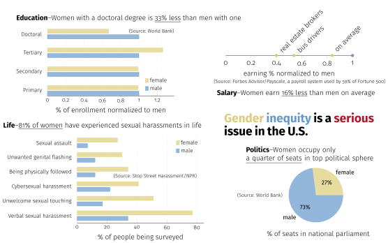
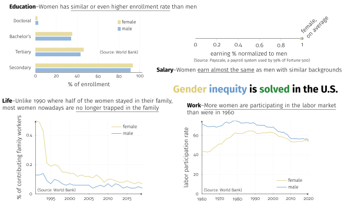

Yun-Sheng Chang (yschang@mit.edu)

Figure 1. Gender inequity manifests in several aspects of women’s life in the U.S., including lower doctoral rate, lower average salary, prevalent encountering of sexual harassment, and a small body of representation in the top political realm.
Scale from fully deceptive (-2), neutral (0), to fully earnest (2).
 Figure 2. Gender equity is no longer an issue in the U.S., as evidenced by the similarity between men and women in many facets, including enrollment rate in all levels of education, salary, family-worker proportion, and labor participation rate.
Scale from fully deceptive (-2), neutral (0), to fully earnest (2).
I started out by reading the metadata of each table from the World Bank, and chose the proposition about gender inequity because many of the columns separate out female and male. At first I expected to find evidence of gender inequity quite easily in the given data, but then shockingly realized that it seems to point to the opposite direction—many quantities such as education enrollment rates for women and men are very close in more recent years. Recognizing this, I decided to find some external data to support the chosen proposition. I figured what seems to be the most often discussed topics in the context of gender equity: salary gap and sexual harassment (admittedly, as a male graduate student coming up with these isn’t as easy as it might sound, given that privilegedly they aren’t really part of my lived experience). With those data, making visualizations now turns to the technical side, as described below.
As discussed in the class, many visualization techniques can be broadly characterized as either deceptive or earnest. The earnest ones in my opinion are easier to identify, because as long as a technique requires pulling out more work without distorting the original form it can be defined as earnest. The work can include citing a credible source, finding more comprehensive data, highlighting the most important parts, etc. Deceptive techniques, on the other hand, can sometimes be a bit hard to characterize. There are, of course, deceptive techniques that are easy to identify. For instance, the salary gap in Figure 2 is obviously deceptive: even though the average wages of women and men with similar backgrounds are close, women and men do not distribute similarly in factors such as job titles and industry types. But there are also techniques that I found hard to characterize as deceptive or not. For instance, 1.64% of women have doctoral degrees, while 2.45% of men do. The absolute difference (i.e., 2.45% - 1.64% = 0.81%) is small, so if we draw them on a scale of 0-100%, their difference seems negligible; however, the relative difference is huge (i.e., 2.45% / 1.64% = 1.49), so a normalized scale would significantly enlarge the difference. I found it hard to figure out which is the “right” way (and by implication, the other one would be deceptive) of representing the difference, mostly because I don’t really know if the difference actually matters–if it does matter, then hiding it would be deceptive; if it does not, then enlarging it is the crime.
The example above brings me to the reflection of “what is ethical analysis and visualization.” Even though we cannot know a priori whether a technique is deceptive in a completely objective manner (e.g., we might actually believe the difference between women and men with doctoral degrees does matter, but in actuality it does not), but as long as a visualization designer has the intent to be honest with themselves and others, and keeps an open mind to correcting one’s mistakes, the analysis and visualization are ethical.